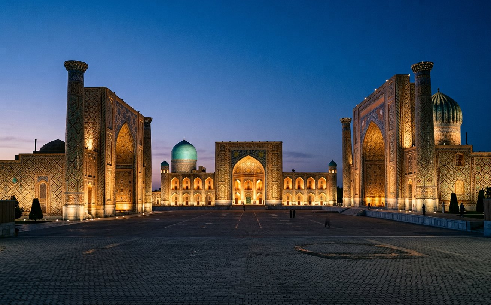

SAYOHAT ATLASI · 01
Manzillar xaritasi
Nuqtani bosing
Sayohat manzili Taklif etilgan yo‘lSxematik xarita · joylashuvlar taxminiy
Moviy gumbazlar, jimjit tog‘lar, tonggi bozorlar. O‘zbekistonni shoshilmay kashf eting — navbatdagi manzilingiz allaqachon sizni kutyapti.

Aniq reja shart emas. Kayfiyatingizni tanlang — sizga mos manzilni biz topamiz.
Tanlovingiz xohlagan payt o‘zgaradi.
Yo‘lga chiqqan odamning ko‘ngli kengayadi.
O‘ZBEK XALQ MAQOLIHar manzilning o‘z ohangi bor.
Sizga qaysi biri yaqin?
Boshqa so‘z yoki yo‘nalish turini sinab ko‘ring.
Nuqtani bosing — manzilni tanishing.
Rejangizga qo‘shing — yo‘lingizni chizing.
Eng yaxshi reja — sizni eshikdan olib chiqqan reja.
Sayohat uchun ilhom va umumiy ma’lumot. Kirish tartibi, transport, ob-havo hamda mahalliy sharoitni yo‘lga chiqishdan oldin tekshiring.